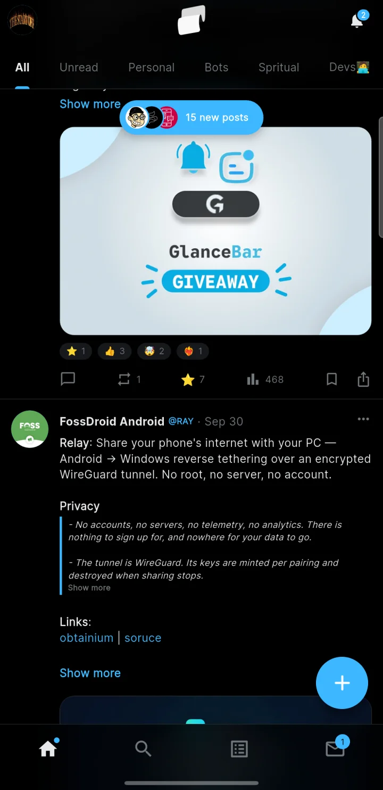

World Brief@worldbrief· 2m
Good morning. Five stories worth your time today, each one under a minute to read. ☕️
gramX puts every channel you follow into a single feed, newest first. Scroll, react and comment the way you do everywhere else, instead of opening channels one by one.
On an iPhone? gramX isn't in the App Store, but you can still install it. Here's how.
On a computer?
Scan with your Android phone
to download gramX there.

Telegram lists every channel as a separate chat, each with its own pile of unread posts. gramX lays them out as one timeline, so catching up is a single scroll.
Good morning. Five stories worth your time today, each one under a minute to read. ☕️
A phone battery that charges fully in five minutes just passed its first safety tests. 🔋
FULL TIME. Three goals in the last twenty minutes. What a comeback. ⚽️
gramX is a full Telegram app, not just a reader. Your channels, your messages and the channels you run, all in one place.
Every channel you follow, newest first. The folders you already made in Telegram show up as tabs, so news, work and fun each get their own feed.
Posts you've read stay out of the way, and read status stays in step with your other Telegram apps.
Each channel gets a page with its posts, media, files and links, plus statistics for the channels you run.
Your direct messages and groups, with replies, forwards, pins, search and scheduled messages.
Mentions, replies and reactions in one place, with notifications for what Telegram already notifies you about.
Write to your own channels straight from gramX, with everything a post can hold.
Telegram links open right inside the app, and anything you share to gramX from another app opens ready to post. Bookmarks, search and explore are there too.
The same three themes as in the app. Pick one and this page switches too.
gramX connects straight from your phone to Telegram, using Telegram's own client library. Nothing you read, write or tap is sent to the developer or to anyone else.
No backend and no middleman. Your sign-in and your messages go from your phone to Telegram, and nowhere else.
What gramX keeps is stored on your phone, in a database encrypted with a key from your phone's keystore. Logging out clears it.
No analytics, no advertising, and no crash reporter phoning home. There's nothing to sell, and nobody to sell it to.
Add any public channel and read it without a Telegram account. Guest mode only reads, so nothing is ever sent on your behalf. Sign in whenever you want to react, comment and sync.
gramX installs straight from this page rather than from an app store. It takes about a minute, and you only do it once.
Tap the button on your Android phone. It's one file, and the right one for almost every phone from the last several years.
Download for AndroidOpen the file from your notifications or Downloads. The first time, Android asks you to allow installs from your browser or file manager. Allow it, go back, and tap Install.
Sign in with your phone number or a QR code from Telegram on another device. Or skip it and read public channels as a guest.
Updating later? Download the new version from this page and install it over the old one. You stay signed in, and your settings stay as they are.
On an iPhone? gramX installs differently there, with a free helper app. Follow the iPhone guide.
Yes. There are no ads, no subscriptions and no in-app purchases. gramX is open source, and if it's useful to you, you can support its development.
No. gramX is an independent app made by one developer. It is not made by, affiliated with, or endorsed by Telegram.
It talks to Telegram through TDLib, Telegram's own open-source client library, so your account works in gramX the way it does in any other Telegram app.
Your sign-in goes from your phone straight to Telegram. gramX has no server, so there is nowhere else for it to go.
Like any Telegram app, gramX appears in Telegram under Settings → Devices, where you can end its session at any time. And all of its code is public, so anyone can check what it does.
Android shows the same warning for every app installed from outside an app store. It's expected, and you only see it the first time.
Every gramX release is built from the public source code and published with checksums, so you can confirm the file you downloaded is the one that was released.
Not to try it. Guest mode reads public channels without signing in. To see the channels you follow, react, comment and send messages, sign in with your Telegram account.
Yes. gramX is a real Telegram app, so posts you read here are marked read everywhere you use Telegram, the same as reading them in Telegram itself.
Yes, for iOS 15 or newer, though not in the App Store. You install it with a free helper app such as Sideloadly, and refresh it once a week. The iPhone guide walks you through it.
If you're not sure, use the main Download button. It gets the arm64-v8a version, which is right for almost every phone from the last several years.
Older 32-bit phones need armeabi-v7a, and emulators and some Chromebooks need x86_64. Both are under Other versions.
Download the new version from this page and install it over the old one. You stay signed in, and your settings stay as they are.
gramX is free and open source under the Apache 2.0 license. If you'd like to help it grow, here's how.
gramX has no ads and sells nothing. Support from the people who use it keeps it going.
Support RaGooseFound a bug or have an idea? Open an issue. Every line of gramX is on GitHub, and pull requests are welcome.
Know someone buried under a hundred unread channels? Send them this page.
Free for Android. Takes a minute to set up, and you can try it without an account.